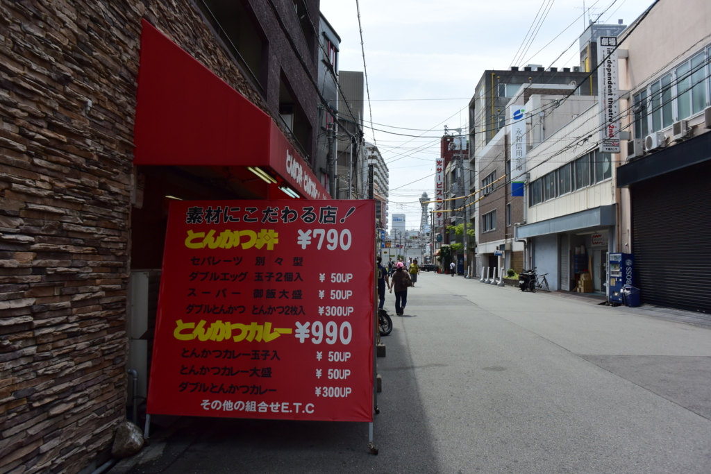
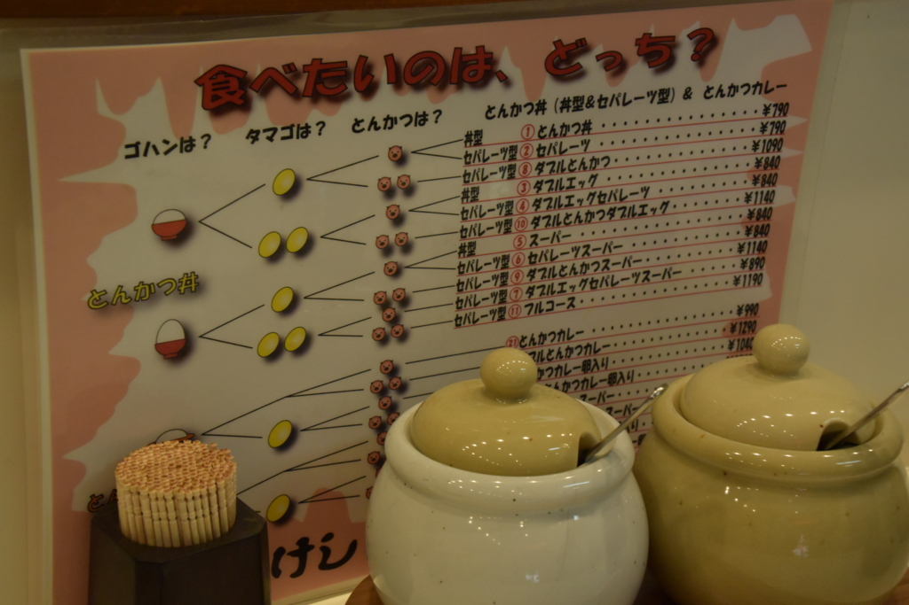
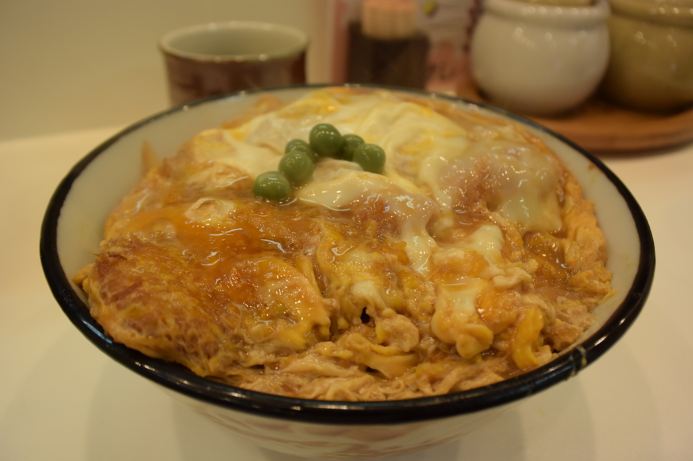
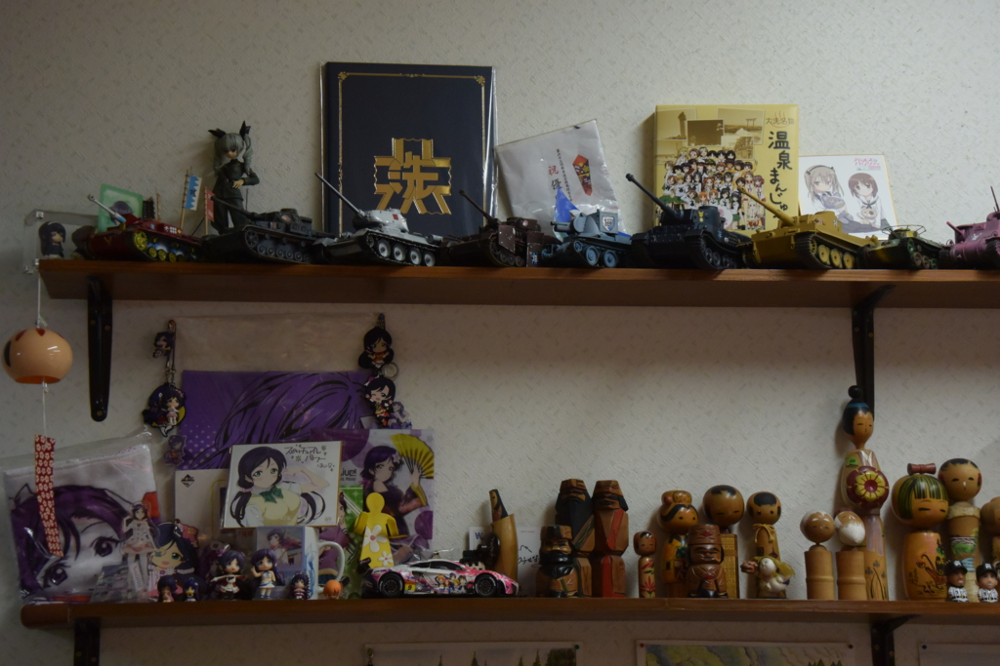
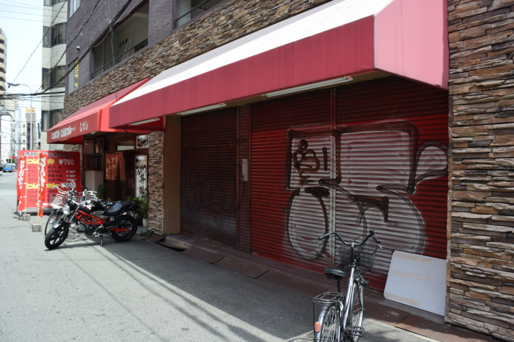

大阪・日本橋、こけしのカツ丼
公開日：

お盆、N 氏、H 氏と連れ立って久しぶりに大阪・日本橋へ寄った。お昼ご飯は、こけしのカツ丼。高校生から大学生の頃にかけて、日本橋へでたら必ず食べていたので懐かしい。正面遠くに小さく見えるのは、通天閣。通天閣高い♪ でんでんタウン安い♪

メニューはブタのカツ丼とカツカレーだけ。ごはんの量と卵の数でメニューが果てしなく分岐していく。カツ丼は、どんぶりタイプとセパレートタイプが選択可能だけど、オトコならどんぶり一択だと思う。ちなみに僕はごはん普通、卵2個のダブルエッグ（とんかつ丼）しか食べたことがないと思う。中断はあれ、15年以上通ってるけど、ダブルエッグ以外に浮気したことはない。女性とカツ丼には一途なのですよ、僕は。

トンカツは割と薄め、そこにとろっとした卵がたっぷり乗っている。ほんとうに昔の味と変わってなくてびっくりした。自分が作るカツ丼ともまた味が違うんだなー。
店は改装したのか、少し小さくなっていた。昔はカツ丼を書き込んでいると、背中からおばちゃんが「たくあん追加しとくで！」と頼んでもないのに小皿に入れてくれたものだった。

でも、棚に飾ってあるコケシは昔のままかな。なんかやたらガルパングッズが増えていたけど、大将がガルパンファンなんだそうな。ついでにお店をいつ改装したのか聞いてみたのだけど――

テナントの都合で隣に移っていただけらしい（シャッターのある方が昔のこけしの場所）。ぜんっぜん気付かなかった／(^o^)＼
久しぶりに寄った日本橋はすっかり様変わりしていて（萌えが増えたな！）、寄るべき店もかなり減ってしまったけど、変わらない店もあるのは安心だなーと思った。花月の前のジュンク堂によるのも定番ルートだったのに、ドン・キホーテになっちゃうしなぁ。大阪球場の古書街にもよく言ったけど、きっともうないんだろうな。